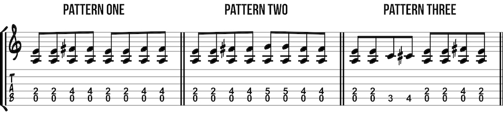
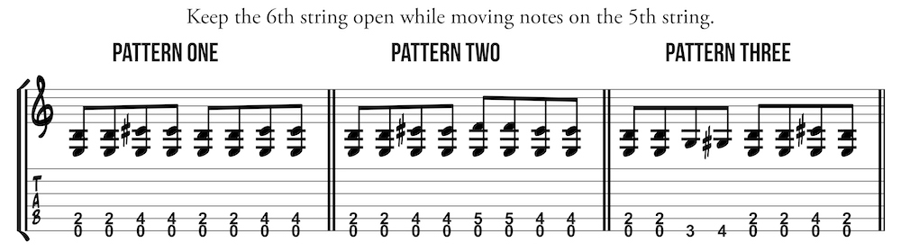
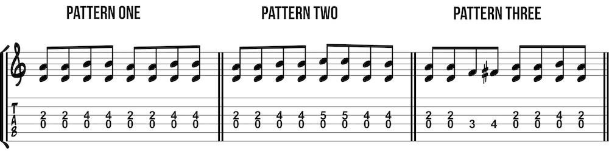
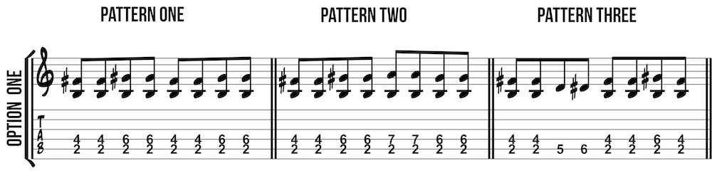
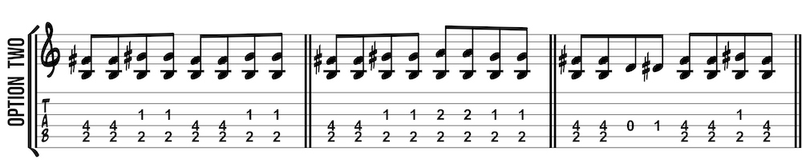

All American popular music is deeply rooted in the blues. From jazz to rock to country to rap, the blues is an essential influence on most styles of music. Because guitar has been so widely used in blues, no guitar method would be complete without diving into the blues. This style of music, like any other style, could be studied in-depth for many years. What is presented here is an introduction to some basic aspects of the blues.
Listening is the most important aspect of learning a new style of music. Use this list of suggested blues and blues-influenced guitarists as a starting point. Find some artists that you like and listen to them non-stop. Figure out who their influences were and listen to them nonstop. Find musicians influenced by them and listen to them nonstop. Plummet down the rabbit hole.
We covered the basic blues shuffle patterns and it may be helpful to review them now
Keep the 6th string open while moving notes on the 5th string.
Keep the 4th string open while moving notes on the 3rd string.
The key of B is more difficult to play than the other keys because the root is not based on an open string. Option one requires large stretches while option two requires muting the fourth string. Transpose by treating any other fret as the root.
 